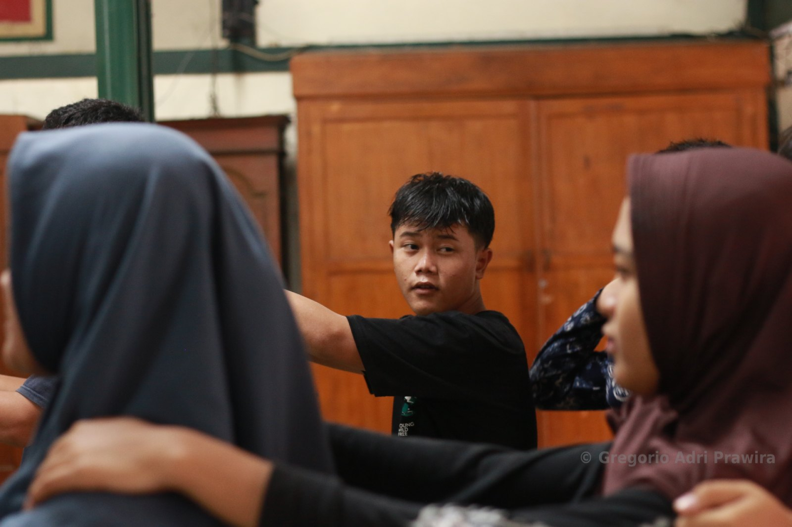
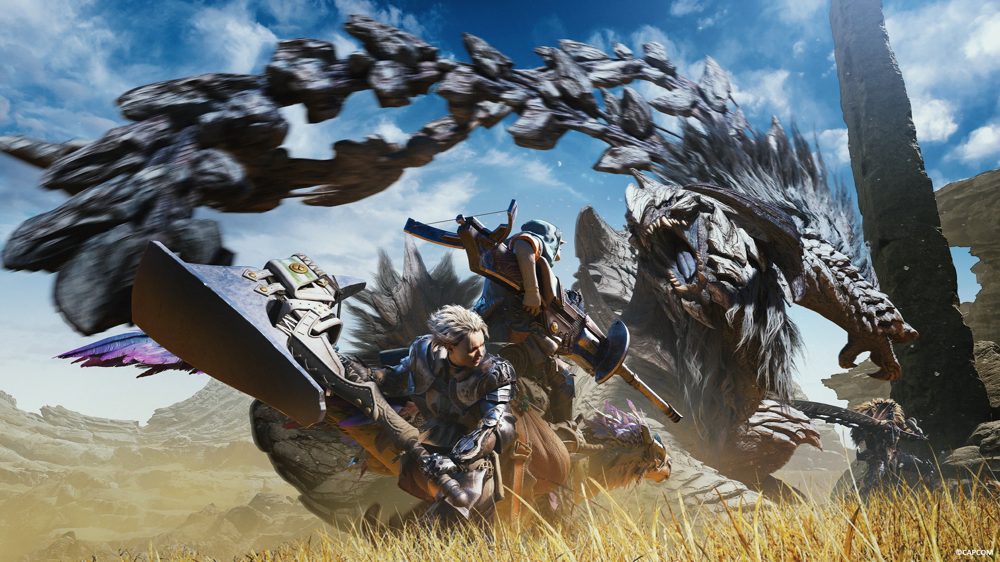

Things That I Love
Photography
Why I like it
It started when my uncle took pictures during a family outing, printed them and kept them in an album. Looking through it, I realised he had preserved precious moments we could return to. That is what drew me to photography: capturing memories.
In middle school, I joined a photography club and met my mentor. He taught me the basics, techniques, patterns and tools, even how to make my own camera. Above all, he taught me that a photo can carry meaning and tell a story. I began noticing small details and visual patterns that I might otherwise have walked past.
One lesson has stayed with me: knowing how and when to use your tools matters more than how many you have. Photography still gives me a reason to explore, whether that means hiking, trekking or visiting somewhere I would not normally go.
Genres
- Human interest
- Landscape
- Architecture
- Products
Some of my works

Video Games
Why I like it
I love games because they are fun, but they can be more than that. They can be a powerful storytelling medium, sometimes even more memorable to me than a film.
Co-op games give me a way to socialise with friends and work together towards a shared goal. Beyond playing, I am fascinated by how the industry has grown, how games can influence social norms, and how people's perceptions can shape games.
Genres
- RPG
- Action
- Narrative games
- Co-op
Some of my favourite games

Monster Hunter
The Monster Hunter series is a franchise of RPG Hunting Action video games featuring action combat in naturalistic environments. The player takes the role of a Hunter, slaying or trapping large monsters across various landscapes as part of quests given to them by locals. Players can work together with 3 others against difficult monsters, which become the essential selling point of the game.